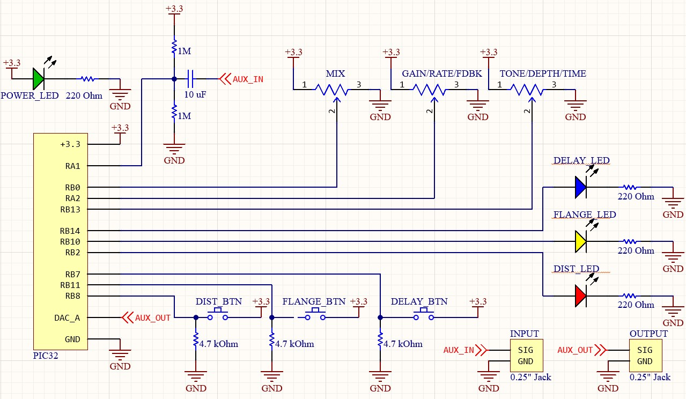

Introduction
Audio effects are used in nearly every recorded and live song across genres, whether it is reverb being added to a vocalist or noise being filtered from a drum track. When used with guitars, they’re so ubiquitous that the interesting tones they create are often already associated with the instrument (like distortion), although they can also create weirder sounds that seem like a different instrument entirely. Guitar pedals create a lot of these effects by intercepting the input audio, usually a clean input from an electric guitar, and manipulating it into a different, often much more complex sound.
Our guitar pedal was an opportunity to utilize concepts of digital signal processing on a PIC32 microcontroller. Earlier in the semester, we worked on a sound synthesis lab to artificially simulate bird songs, and another where we read input from analog sources into our microcontroller. This project allowed us to combine what we learned from these projects by both manipulating sound and by reading external input (including audio and user input), while also letting us understand what happens under the hood when a simple guitar sound becomes a harsh distortion.
This project builds on a number of different Electrical and Computer Engineering concepts that we’ve focused on throughout the semester. On the computer engineering side, we are of course using the C programming language, interfacing with I/O devices, performing digital signal processing, and scheduling various interrupts to sample and process audio at high speeds; on the analog side, we connected numerous additional inputs and outputs including audio, potentiometers (knobs), buttons, and LEDs, and added analog circuitry necessary (specifically, a high pass biased filter) to make the signal readable by the digital side. We soldered components together and drilled into a physical container so we could house the microcontroller, breadboard, and wires in a single box.
The PIC32 microcontroller was used entirely in this lab and programmed in C using MPLAB IDE software. Testing was done using a guitar and a quarter-inch jack connected directly to our pedal, with the output connected to an audio amplifier to broadcast the manipulated sound. In the end, our guitar pedal worked as expected to successful completion of our final demo. A video of the pedal in use can be found below:
High Level Design
For our final project, we designed and built a guitar pedal. A pedal is an electronic device that manipulates input audio signals in real time using various signal processing techniques. This can occur either in software, as a digital pedal, or in circuitry, as an analog pedal; our pedal is a digital one, which means that the audio is sampled and quantized, manipulated in software, and then converted back to an analog signal afterwards. Our final design consists of three effects that users can activate— distortion, flanger, delay, each of which is controlled by three parameters such as delay time, modulation depth, amount of distortion clipping, and so on. When a user turns on an effect, by pressing the corresponding button, the sound immediately changes, and the LED associated with that button turns on to indicate which effect (if any) is in use.
When the input signal of a guitar enters the pedal, the input signal is biased and sent to the ADC to be processed with the PIC32. After processing, the signal is sent to the DAC and a cable can connect it to an amplifier speaker. When no effect is in use, the output signal is (nearly) the same as the input one. The magic happens when the user pushes a button on the box, and the respective LED turns on. The effect is applied digitally to the signal in software within the PIC32 before being sent to the DAC, and alters the sound that is played from the output. A block diagram of our system and the signal pathway can be found below:
Our project was partially inspired by the designs of existing pedals; when determining which audio effects we wanted to implement in our design, we looked at a range of existing guitar pedals to learn which effects are commonly used by guitarists (i.e., the target market for this device). Each of the three effects that we decided to implement on our own pedal is described below:
Summary of Effects
For a more detailed description of the implementation of these effects in software, please see the Software Design section further below.
Distortion
The Distortion effect is activated when the red button is pressed. The red LED turns on to signal to the user that the effect is in use. Compared to the clean sound, the effect adds more aggression and energy to the sound produced. This is as a result of the higher amplitudes above the fixed threshold getting attenuated. Depending on the kind of output you want, the three knobs knobs can be adjusted. The Gain knobs add more volume or increase the amplitude of the signal without changing the threshold amplitude. This results in even more distortion. The tone knob adjusts the cut off frequency of the low pass filter. This makes it possible to get rid of high frequencies and harmonics.
Flanger
The Flanger effect is activated when the yellow button is pressed. The yellow LED turns on to signal to the user that the effect is in use. The flanger may sound like a chorus but the sound it produces is more like that of a sweeping jet plane. This effect is very interesting because it combines modulated signals with the original. The modulated signal is delayed to make it seem like it is coming from the instrument; however, the rate of this delay can be adjusted with the rate knob. This determines how fast or slow the modulated signal is oscillating. The depth knob makes the modulated signal more noticeable, sometimes producing a “wonky” sound.
Delay
The delay effect is activated when the blue button is pressed. The blue LED turns on to signal to the user that the effect is in use. This effect plays back the delayed version of the original signal. It may sound like an echo but the idea behind this is using the output as an input. You can control this by adjusting the feedback knob to determine how much output is fed back as input. When adjusted to the max can create close to infinite sound produced with a delay. The delay time knob lets the user determine how far back in time you want to sample.
System Design
User Overview
To maximize ease of use for typical consumers already familiar with off-the-shelf guitar pedals, we modeled our user interface on traditional pedal designs. To make the system portable, all of the electronics are encased in a large (7x5x3 inches) metal box; protruding from this box are a set of knobs, buttons, and LEDs that provide feedback to the user and allow them to change system parameters. To allow for interchangeability with a large majority of pedals available on the market, our device is equipped with an industry-standard ¼ inch jack for audio input and output. 5V DC power is supplied to the PIC and peripheral circuitry through a barrel connector that plugs in through a port in the back of the device. An image of our pedal can be found at the top of this report:
In the top left corner of our pedal is a green LED that indicates if the device is receiving power. Upon startup (i.e., being plugged in), the power LED turns on and the pedal begins in bypass mode: no effect is applied to the input signal. To activate an effect, the user can push one of the three buttons on the control panel; pressing the red button applies a distortion effect to the input signal, yellow enables the flanger effect, and blue yields a delay effect. Upon selecting one, the corresponding color LED will illuminate below the pressed button to indicate that the user’s input was properly registered. Only one effect can be active at any given time. To switch effects, the user can press a different button; pressing the button corresponding to the active effect will return the system to pass-through mode. Each button is clearly labeled on the control panel to aid the user in identifying which effect corresponds to each button.
To change the audio parameters of each effect, the user can adjust the three knobs on the control panel. The knob value is read by software, and the pedal processes their values differently depending on which effect is active. See Software Details below for more information on the different effects.
Hardware Details
The circuitry implemented inside of the guitar pedal was quite simple, since most of the audio manipulation was done digitally on the PIC. The input signal was acquired through a standard ¼ inch jack (see Appendix C for digikey product numbers, cost, and purchasing links) and passed through a biased high-pass filter to bring the signal into the ADC’s range of operation. In the high-pass filter, the signal was passed through a XX μF capacitor, the output of which was connected to GND and VDD via two parallel 1MΩ resistors. The resistor and capacitor values were selected to ensure a sufficiently low corner so that any DC bias from the guitar pickups would be removed while preserving the audible signal; since human hearing ranges from approximately 20 Hz to 20kHz, we selected a corner frequency of XX Hz. The output of the biased high-pass filter is then passed to the ADC input (pin XX) on the PIC.
After the signal is digitally processed on the PIC, it is converted to an analog output via the 12-bit DAC on the development board. The DAC output is directly sent to the output ¼ inch jack of the guitar pedal, which can be connected to an external speaker for amplification and sound production.
To allow the user to switch between different effects, three large arcade-style buttons (generously provided by Andrew Tsai) are mounted on the pedal box. Each button is mechanically connected to a limit switch (Digikey #SS-5GL2) so that the switch is closed when the button is pressed. The terminals of each switch are wired from a GPIO pin on the PIC to GND, and a 5 kΩ resistor serves as a pull-up connection to VDD to prevent the node from floating when the switch is open; in this setup, the GPIO pin reads low when the button is pressed and reads high when the user is not interacting with the button.
The three knobs used to control different effect parameters are simply 1 kΩ potentiometers with outputs that range from VDD to GND. The output pin of each potentiometer is connected to an analog input pin on the PIC.
The three LEDs used to indicate the current effect are each wired from a GPIO pin to GND, with a 220Ω resistor to limit current drawn from the PIC. The power LED in the top right corner of the pedal is connected from VDD to GND, also with a 220Ω current-limiting resistor.
Please see Appendix B for a schematic of the internal circuitry.
Hardware Testing and Debugging
Testing was done throughout the project with an online virtual guitar which was connected to the ADC using an AUX cable to the computer. We faced some challenges when it was time to test the code with a guitar connected to the ADC with a quarter inch jack. We did not get any output when the guitar was being played. The guitar was producing a signal but was not being sent to the ADC. We knew there was an input signal because the probes of the oscilloscope were connected to the input. Our setup was as follows: The quarter inch jack of the guitar was connected to the microcontroller via a breadboard with a biased high pass filter. This allowed us to increase the DC bias on the signal to prevent the ADC from zeroing the negative part of the waveform. A 0.1µF capacitor was used together with 2 1kΩ resistors — one connected to ground, the other Vdd. However, this posed an issue where the cutoff frequency of the high-pass filter was very high and wiped out the entire input signal. This meant nothing was being sent to the ADC. The fix was to further increase the resistance to 1MΩ to prevent our guitar input from being filtered out.
Software Details
To change the audio parameters of each effect, the user can adjust the three knobs on the control panel. The middle knob sets the mix parameter for all three effects; this value determines how much effect is applied to the input signal. A low mix means that the clean “dry” signal would be much louder in the output relative to the altered “wet” signal, and vice versa for a high mix value. The remaining two knobs are effect-specific.
For distortion and flanger, the mix functions changes the relative amounts of affected signal: out[n] = mix * effect_out[n] + (1 - mix) * in[n]
For delay, though, even with a full volume delay, we still want to hear the original sound as well: out[n] = mix * effect_out[n] + in[n]
Distortion Effect
Distortion, which gives the sound a harsh or dirty tone and is often found in rock music, is created as a result of clipping the audio signal when its magnitude goes above a fixed threshold. In our case, we are hard-clipping the signal, which means that any amplitude above the threshold is capped at the threshold. (On the other hand, soft clipping gives a warmer and less harsh tone, and occurs when the signal above the threshold is reduced but not completely limited; this effect is called Overdrive). This clipping makes the wave start to resemble a square wave, and so it results in many high frequency harmonics that creates the quintessential sound of distortion. In addition to the mix knob, this effect also is controlled by the Gain and Tone knobs.
- Gain: The left knob controls how distorted the sound is. It works by changing how much the input signal’s volume is increased, or internally, by what factor greater than or equal to one by which the amplitude is multiplied. Because the clipping limit stays constant, increasing the amplitude of the input signal means that more of the signal gets clipped, making an even more distorted sound.
- Tone: The right knob allows for users to roll off some of the piercing high frequencies that are created as a result of the distortion. Especially with high gain, a lot of high frequencies are created, and these can make for an unpleasant sound, so this knob adjusts the cutoff frequency of a low pass filter that can be used to reduce these loud harmonics.
effect_out[n] = min(threshold, max(-threshold, (in[n] * gain)))
Delay Effect
A delay is a relatively simple effect, in which the previous moments of the input signal are saved and played back alongside the input. Generally, this creates an echo, where the delayed signal repeats the previously played sound. With shorter delay times, this can also help vocals sound fuller (by essentially duplicating the vocals with a copy that is playing a moment delayed) or give guitars a more complex sound sometimes referred to as a slapback delay. Internally, this effect saves each value from the last quarter of a second, and then at each moment, plays back a previous sample alongside the new input signal. This effect is controlled by two knobs besides the mix: delay feedback and time.
- Feedback: Sometimes, echoes will have an echo that repeats and slowly fades away, instead of just a single echo. This is the result of feeding the echo back into the effect instead of just storing the new input signal. The feedback knob on the left adjusts how much of the echo is saved alongside the input signal. Theoretically, a feedback multiplier of 1 would mean that every input sound is added to the delay and never decreases in volume, which will often quickly turn the output into messy indistinguishable noise. Our feedback knob doesn’t allow the user to have this infinitely repeating ability, and instead will ensure the echo always is decreasing.
- Time Delay: The right knob adjusts how long after the original signal is played should the delayed signal be played. When this knob is turned up, the echo may come after a more noticeable delay (still around a quarter second), but when this knob is turned down, the delay will be so quick that it almost blends with the original signal and changes the tone. Then, by setting the knob low but not at the minimum, users can create very short yet audible delays like a “slapback” delay.
With no feedback, the effect will look like this: effect_out[n] = in[n] + in[n - delay_time]
Taking feedback into account, we get a slightly more complicated statement: saved[n] = in[n] + feedback * saved[n - delay_time]; effect_out[n] = in[n] + saved[n - delay_time]
Flanger Effect
A flanger is a type of modulation effect, where a periodic oscillator (typically a sine wave) is used to slowly adjust the input signal, and gives it motion even when the input signal stays constant. In this case, we build on the delay effect, using a very short delay of the original signal (typically less than 20 ms) and slowly changing the delay time based on the oscillator. Because the delay is so short, the output doesn’t sound like an echo, like it would with longer delays; rather, this changes the timbre of the sound as the waveform begins to interfere with itself. And because the delay time is periodically changing, this amount of interference changes too. Using delay means that this effect can use the same sample array that the delay effect uses, even though it will be getting different actual samples. The effect is often described as giving the sound a “whooshing” feeling like an airplane flying overhead. Besides the mix knob, this is controlled by a rate knob and a depth knob.
- Rate: The left knob controls the speed at which the oscillation occurs, with the longest being several seconds per oscillation and the shortest being a fraction of a second. With a slower rate, the period of the effect is less noticeable, and instead the timboral change of the sound is primary. As the rate gets smaller (around a second or less), the oscillation becomes more noticeable. When the rate gets extremely small, weird byproducts of the effect start to kick in— delaying a signal is the same as sampling from previous values of the signal, and so changing that delay time essentially means that we are slowing down or speeding up the rate at which we sample; when this change is extreme, the result is a noticeable de-tuning of the sound, because the frequencies we sampled are now being played back much slower or faster than they were originally recorded. And when the rate gets extremely small, to the point where it increases above 20Hz, the period is so fast that human ears no longer hear each period, but instead hear a note from that frequency— the wave is changing at an audible frequency, which further changes the tone. (If interested in this, look into frequency modulation (FM) synthesis, which doesn’t use the delay— instead modulating the frequency directly, but still works similarly to create many interesting tones).
- Depth: The right knob controls how much the delay time increases and decreases by. A higher depth will lead to a more dramatic change in the sound. Especially with a higher rate, the depth also causes the periodic nature of the effect to be emphasized, because the delay time changes by a greater amount each period.
effect_out[n] = in[n] + in[n - (DEFAULT_DELAY + depth * sin(rate * n))]
In the pseudocode above, note that there is a default delay of around 15 milliseconds around which the oscillation occurs. The following shows this more clearly: delay = DEFAULT_DELAY + depth * sin(rate * n); effect_out[n] = in[n] + in[n - delay]
Design Results
Delay Results
Delay Videos
The video below demonstrates changing the “Delay Time” parameter, which adjusts how long after the original sound until the delay is played:
The video below demonstrates changing the “Feedback” parameter, which adjusts how much of the delayed signal is fed back into the effect:
The video below illustrates the delay copies appearing on an oscilloscope as the effect is played:
Scope Outputs
The delay effect copies a signal, potentially multiple times if the feedback is high. The following oscilloscope output shows the original signal along with the copy immediately following it:
The picture below shows the same effect with a lower mix. While the initial sound is played at the same volume, the copy is relatively quieter. The user therefore can choose how much “wet” effect sound they want mixed into their “dry” clean signal.
The feedback option causes the delayed signal to be fed back into effect, resulting in continued repetitions of the original signal. The image below shows the delay effect in action with feedback turned up, as viewed on an oscilloscope. Note how the copies continue to decrease in volume; this was done in order to prevent delays from continuing indefinitely (and quickly becoming too loud as any new sounds stacked on top of each other):
Flanger Results
Noise in the oscilloscope readings and degradation of the signal over time due to damping effects prevented the flanger effect from being clearly visile on the scope, so images of scope outputs are not included. However, the effect is quite audible, as shown in the videos below:
Videos
The video below demonstrates changing the “Rate” parameter, which adjusts the speed of the flanger’s low frequency oscillator (LFO):
The video below demonstrates changing the “Depth” parameter, which adjusts how much the LFO changes the delay time:
Distortion Results
Videos
The video below demonstrates changing the “Gain” parameter, which adjusts how much the input signal is amplified and slammed into the threshold:
The video below demonstrates changing the “Tone” parameter, which adjusts the cutoff frequency of the low pass filter applied to the output:
The distortion effect successfully amplifies and clips the input signal; the amplification is especially visible on an oscilloscope, where a more typical looking signal becomes block-shaped when slammed against the clipping threshold. This can be seen in the video below:
Additionally, a more zoomed in version is shown below, where the clipping of the waveform can be more clearly seen. While it isn’t completely flattened against the threshold, it is still pushed relatively hard against that cap, creating many new high pitched harmonics that distort the tone:
Digital Quantization
Because distortions work by multiplying the input signal until the waveform is pushed up against a threshold, the input signal may be greatly magnified. This is done digitally, so when the signal is multiplied, but then capped at a certain frequency, we are essentially reducing how much information we use to store the dynamic range, or the amplitude value at each sample. This can cause the distorted signal to become “quantized” because we now have fewer bits of information to store it, giving it a less pure distorted tone that sounds slightly like a “bitcrusher” effect. This is one of the tradeoffs of doing a multi-effects pedal— while we can easily make the knob control different parameters digitally based on the active effect, we can’t make the knob control an analog input gain because then it would have to apply for each effect, not just the distortion.
Equalization
With more and more distortion, especially with high gain levels, waveforms pushed up against the hard limit are capped similar to square waves, and the distorted signal begins to get more of the harsh harmonics that square waves have. They still aren’t completely like a square wave yet though, so the original sound can shine through a bit without hearing only harmonics. The topmost image below shows a spectrogram of a distorted signal coming out of our pedal, and the bottommost image illustrates the harmonics of a pure square wave.
Although the distorted output has many additional harmonics from the original signal, plus noise from the 12-bit DAC, the relative shape of the harmonic patterns are clearly relatively similar. For reference, analyses of a sine wave (top) and white noise (bottom) are also included in the two images below.
Because many of these high frequency harmonics are often unpleasant for the listener, distortion effects usually include a low pass filter, with a cutoff frequency controlled by a knob that’s often labelled, “tone”. This allows users to roll off some of the high frequencies to get a more pleasing tone that suits the user’s needs. A spectrogram of the distortion output with a low pass filter applied is shown in Figure X.
Conclusion
Overall, we really enjoyed working on our project and were able to successfully implement our target of three effects (distortion, flanger, and delay). Each of the three effects can be modulated by the three knobs that set various parameters, and the changes in parameter values are clearly audible, as shown in the videos above. The final enclosure is fairly aesthetic, hides all of the internal wires, and protects the PIC and associated peripherals from the external environment. Our guitar pedal also maximizes ease of use for consumers seeking to use this product in combination with or replacement of existing pedals available on the market; the input and output ¼ inch jacks offer a secure, standardized connection to external audio equipment.
To expand on our pedal, we were thinking of adding a looper effect, which allows users to record long (i.e., 15-20 second) audio samples and mix them into currently played sounds. Because the memory available on the PIC (and the external RAM available in the lab) is quite limited, this would require an SD card to store the large number of audio samples (44000 samples/sec * 15 sec * 2 bytes = 1.32 MB). However, getting the SD card reader to properly interface with the PIC proved to be quite a challenge due to the limited documentation available and time constraints of this project, so we opted to focus on producing more achievable high-quality effects to make this device more useful for consumers. In the future, we could develop an improved framework for interfacing with the SD card over SPI to read and write data. In addition, although all of the effects that we implemented are fully functional, the distortion effect volume is much louder than that of the other effects and pass-through; equalizing volume across all effects would be another avenue for improvement. Future work could also investigate chaining several of our pedals together or activating several effects at the same time; adding a graphical display like the TFT could be interesting as well, but we are quite satisfied with our current design.
Our device does not appear to pose any intellectual property concerns; we did not explicitly reverse-engineer existing guitar pedals, and the methods for generating each effect are general enough that there is no risk of copyright infringement or other IP violations. In principle, our design would be eligible for a patent since the internal design of our pedal (i.e., using a PIC32) is quite different from existing pedals and implements a rather unique set of effects.
Ethical and safety concerns were quite limited for this project. The only feasible hazard posed by this device is the amplification of sound produced by the external speaker, but the onus is on the user to ensure that they do not turn the volume loud enough to sustain damage to hearing. The internal circuitry is completely enclosed in the metal box, so the user is protected from any contact with the electronics or overheating components; because the outside of the box is grounded, the user must take care not to accidentally connect the chassis to a power source. Additionally, if one of the knobs or LEDs comes loose, it may pose a choking hazard, but the risk posed is quite minimal. There are no legal considerations or applicable laws related to this device, with the exception of city noise ordinances, which the user is responsible for abiding by.
Acknowledgements
Many thanks to Hunter Adams and Bruce Land for their guidance on our project and help in the lab. In addition, our project would have been much less aesthetically pleasing without the assistance and material support of Andrew Tsai.
Appendices
Appendix A - Statements
The group approves this report for inclusion on the course website.
The group approves the video for inclusion on the course YouTube channel.
Appendix B - Circuit Schematics
Appendix C - Components and Cost Estimation
A spreadsheet listing the components used in our project and cost estimates can be found at this link. Note that many of the component prices decrease when bought in bulk, so the manufacturing cost of the pedal would be much cheaper if it were to be mass-produced for sale on the market.
Appendix D - Distribution of Work
All three group members contributed equally to the software development and design of the pedal enclosure. We also utilized Google docs and a shared drive to collaborate on reports as well as store all files. All of our code was stored on Github. However, most of the work was completed in the lab. For this report, Kingsley wrote the introduction, Jade worked on the Hardware Design, and Jake wrote the Software Design section.
Appendix E - References
Much of our source code handling PIC setup, peripheral initialization, protothreads, and other low-level functions is adapted from the ECE 4760 SECABB software posted on the course website. The PIC32 and peripheral devices were mounted on the course development board designed by Sean Carroll; schematics and layout can be found on the ECE 4760 course website.
Appendix F - Code
A commented listing of our code can be found at this link - INSERT LINK HERE
Appendix G - Demo Videos
A Cover of The Eagles' "Hotel California" with our flanger effect applied - note the subtle sinusoidal modulation of the output sound:
A rendition of
Hunter, Play Despacito - a piano rendition of everyone's favorite song with delay and flanger effects applied:
All I Want for Christmas is [4760] - Mariah Carey's classic hit fed into our pedal with fun effects applied! Note that the parameters for the distortion effect were hand-tuned to sound good with the guitar input, which has a slightly different range than the AUX jack from an iPhone, resulting in a slight reduction in sound quality for this effect: